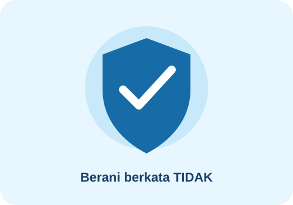

- Berani menolak: katakan tidak dan tinggalkan situasi yang berisiko.
- Pilih pertemanan positif: berteman dengan orang yang menghargai pilihan dan batasanmu.
- Isi waktu dengan kegiatan bermanfaat: olahraga, seni, organisasi, atau belajar keterampilan baru.
- Cari informasi tepercaya: jangan mudah percaya pada ajakan atau informasi yang menyesatkan.
- Bicarakan masalah: ceritakan tekanan yang kamu alami kepada orang tua, guru BK, atau orang dewasa tepercaya.
Kalimat penolakan sederhana:
“Tidak, aku tidak mau. Ayo kita lakukan kegiatan lain
yang lebih aman.”